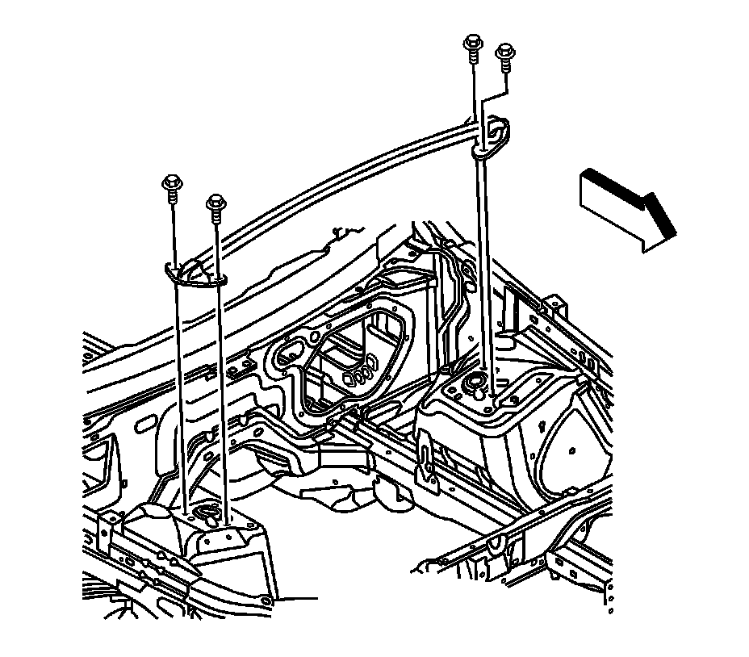

Cross Vehicle Brace Replacement
Cross Vehicle Brace Replacement
Removal Procedure

1. Open the hood.
2. Remove the bolts from the cross vehicle brace.
3. Remove the cross vehicle brace from the vehicle.
Installation Procedure
1. Install the cross vehicle brace to the vehicle.
Notice: Refer to Fastener Notice (Fastener Notice) .
2. Install the bolts to the cross vehicle brace.
Tighten the cross vehicle brace bolts to 25 N.m (18 lb ft).
3. Close the hood.